首页 / D 设计细节
 #14:19
#14:19大场面就要停一下！
Stop for Big Moments!「具体设计」分类开篇：命中停顿（hit stop）——攻击命中时短暂停住的时间——让手感天差地别。樱井从 FC 卡比起就在打倒 Boss 时停顿；射击游戏也应在关键时刻停顿，强化击败或被击败的手感。
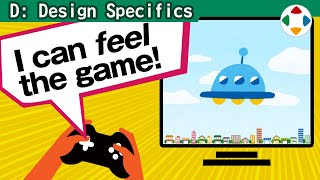
#22:24赋予按钮「重量」
Giving "Weight" to Buttons同一个物理按钮，会因角色移动速度、惯性、跳跃规格、延迟、帧率而感觉轻或重。这是电子游戏特有的武器：手也能接收触感；《大乱斗》斗士的移动缓急、动作的夸张度都经过手感推敲。
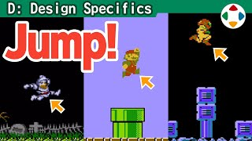
#34:53跳跃物理
Jump Physics跳跃的一般写法：先给向上的速度，空中每帧加固定下落加速度。但跳跃规格应依游戏目的改变——马里奥、银河战士、魔界村、桑吉尔夫的打桩机、大乱斗的起跳蓄力，以及特别版重新采用的「隐藏味道」。
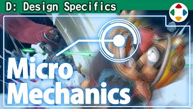
#45:32八种命中停顿技巧
Eight Hit Stop Techniques《大乱斗 特别版》的命中停顿不只是「停」，还藏着很多别的游戏少见的特殊规格：受击方抖得更大、判定不抖、地面横抖空中全向、振幅收敛、停顿量可调、插值到受击姿势、攻击方微动、按镜头距离调整振幅。
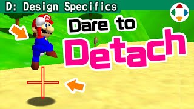
#52:51别把注视点黏死
Don't Anchor Your Center Point3D 游戏的镜头有注视点，通常跟着角色——但不能单纯黏在角色上。马里奥 64 跳跃时会离开画面中央，让人感到高度；《Armored Core》《卡比的空中滑翔》等也会让角色偏离中心以增强演出。
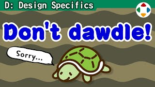
#63:07对「慢」说不！
Say No to Slow!游戏的好恶因人而异，但几乎唯一谁都爱不了的是「慢」：做什么都花时间、什么都没在做的空白时间。能缩短的就缩短，意识实际操作时间——「慢是罪」。
 #73:04
#73:04速度的单位
Units of Speed速度 = 距离 ÷ 时间。FC 时代用「点/帧」写规格，但各主机分辨率不同；3D 游戏可用真实单位，但仍要先统一游戏内的距离与时间单位，并培养速度感。
 #82:30
#82:30悬崖边的行为
Behavior at Ledges角色在崖边会不会掉下去，有很多种规格：无条件掉落、移动掉/动作不掉、按动作分别决定，3D 里还有「推一下才掉」、方向补正和自动跳。测试时别放过违和感。
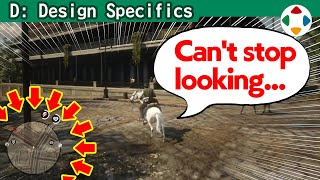
#92:27地图也是游戏画面
Maps Are Game Screens, Too很多游戏实际上是盯着角落的小地图在玩。别放弃思考：参考《不可思议的迷宫》半透明全屏地图，或增加主画面本身的信息量（引导标识、地形布置），想清楚玩家在看画面哪里。
 #104:04
#104:04意料之外的结果
Unexpected Results樱井分享三次「产品版出现意料之外结果」的经历：《Meteos》优化后变快变难、《甲虫王者》手持游戏在大开发板上调整导致饿得过快、《大乱斗 特别版》CPU 偏强——与电脑打交道，什么都可能发生。
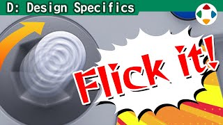
#112:28弹摇杆输入
Flick InputN64 模拟摇杆除了无级方向和深度，樱井还利用「推到底所用的时间」，发明了「弹摇杆输入」：用推杆快慢区分强弱，一步完成冲刺、Smash 攻击等。新设备不该盲目套用，在通用设备上做出独特操作才可贵。
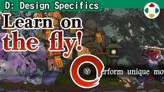
#122:19教玩家怎么玩
Teaching Players How to Play游戏操作复杂，独特系统离不开教程，但没人想玩冗长教程。最差是长文说明书，其次是无机质练习场；常见是首关路上放文字。关键是让玩家主动边玩边学——樱井对此也多有反省。
 #133:54
#133:54随机性为游戏添彩
Randomness Spices Games Up随机让重复游玩不易腻、每次展开不同，并带来「应对各种局面」的策略；但它不公平，运气差输掉难以接受，也不适合较真的竞技。《大乱斗》角色减少随机，道具保留随机。另外电脑无法真正随机，生成时要参考内部时钟等不确定值。
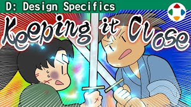
#143:39让分系统
Handicap Systems势均力敌最有趣，但实力差距残酷。《马力欧赛车》式追赶机制不公平却适合休闲游戏；《大乱斗》原则上不给落后者加强，只有 Smash 球、终极必杀槽等轻微倾斜，并靠地形道具制造波动。家里对战时人力让分最有效，另有「自动让分」设置。
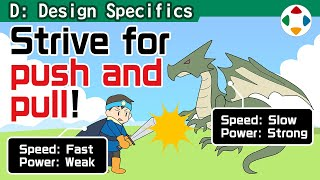
#153:36平均就是平庸
Average and Mediocre Are the Same Thing只看强弱去调平衡，性能会被一路平均化：短处补齐、长处削掉，最后无趣。要保留个性，有长处就把短处放大。不同的东西碰撞才有丰富的博弈。《大乱斗 SP》线上胜率最高 51.43%、最低 47.18%，87 名斗士都落在这窄区间里。
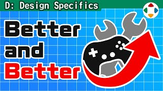
#163:58在线更新
Online Updates樱井很感谢在线更新。从制作方看：现代游戏太复杂；制作中几乎没时间玩完成版；市场的「测试力」完全不同；平衡调整与便利性改进是厂商的服务，要占用核心成员。厂商并不轻视更新——但玩家一开始就弃游，更新再好也没用。
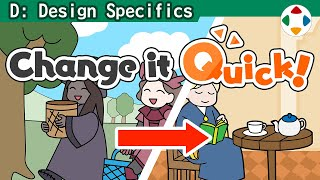
#172:41快速的画面切换
Speedy Screen Transitions画面切换尽可能一下完成——慢是罪。也要顾及制作方情况：《生化危机》的开门演出兼作读取和恐怖演出，《塞尔达》边缘卷屏有助理解地图。切换效果（wipe）若贴合游戏主题、速度可接受，也值得用。
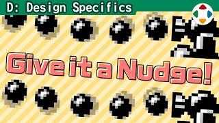
#182:42偏移重心会怎样？
What Happens When You Shift the Center of Gravity?机械式的直线移动、绕中心旋转往往乏味。GB 卡比的「晃晃弹」让精灵位置 6 帧绕一圈偏移，存在感大增；《大乱斗 SP》炸弹、焰的 Blazing End 都把旋转轴从中心挪开。别让机器的常识让表现变得乏味。